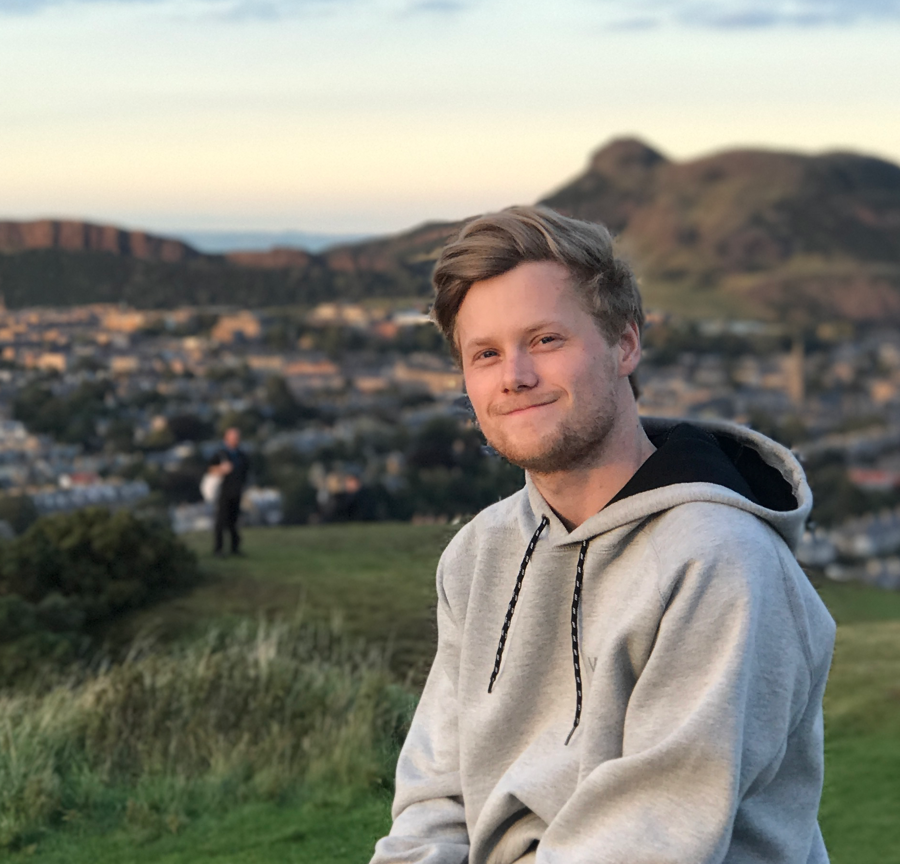

---
# Feel free to add content and custom Front Matter to this file.
# To modify the layout, see https://jekyllrb.com/docs/themes/#overriding-theme-defaults

layout: home
---

<div class="centered-content">
  <div class="about-wrapper">
    <div class="portrait-about">
      
    </div>
    <div class="chat-bubble">
      <h2 class="upper-space-big">Hi 👋</h2>
      <h1>
        <span class="typer" id="some-id" data-delay="80" data-delim=" || " data-deleteDelay="500"
          data-words="I'm @josdyr || I'm Jostein"
          data-colors="#ecebeb">
        </span>
        <span class="cursor" data-cursorDisplay="_" data-owner="some-id"></span>
      </h1>
    </div>
    <div class="triangle">
    </div>
  </div>
  <div class="hello">
    <p>
      I've got a strong passion for Data Science and Machine Learning. I wish to connect and work with wonderful people, like you! Thanks for visiting my website, and feel free to get in touch with me! ☎️
    </p>
  </div>
</div>
